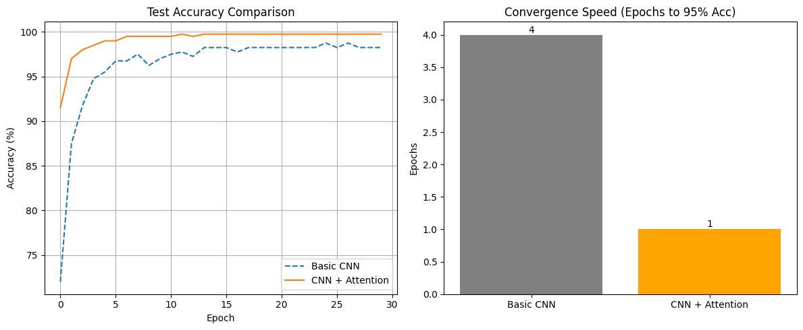
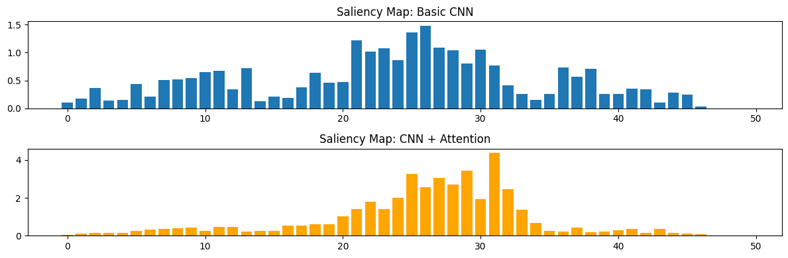
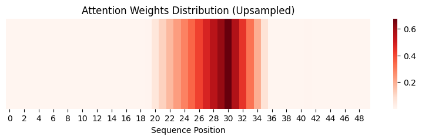
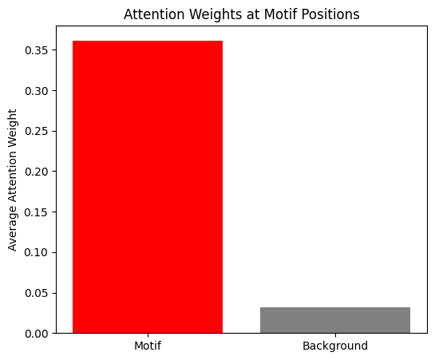
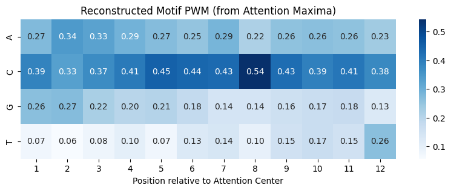
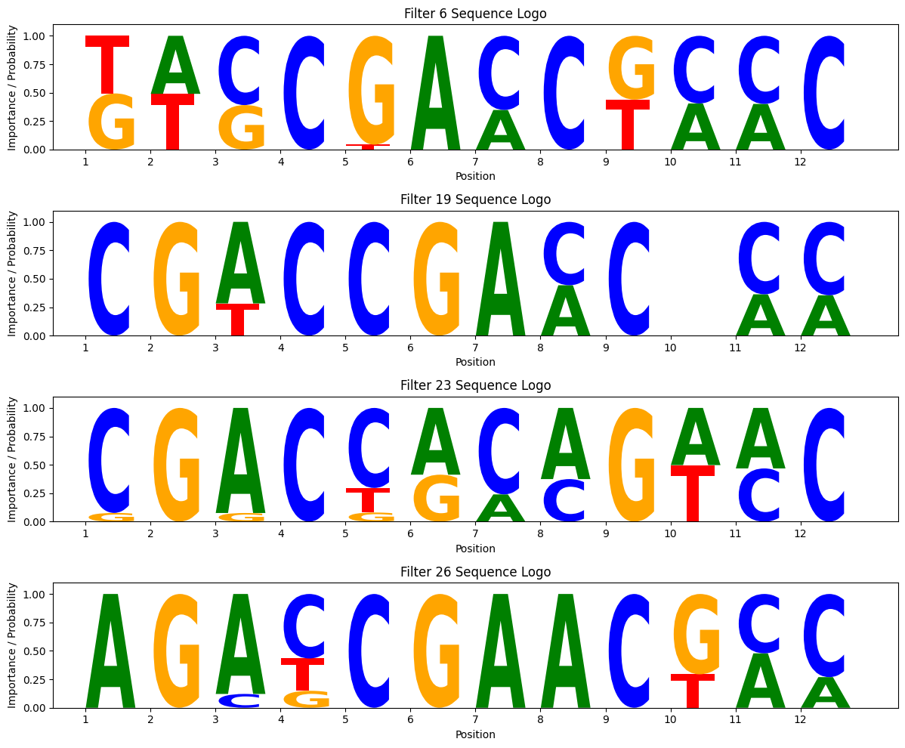

上次跟着基因组学深度学习入门指南跑通了一个基础的CNN模型，效果还不错。但听说现在NLP领域Attention机制大杀四方，我就在想，这玩意儿能不能用到基因组序列分析上？毕竟DNA序列也是一种“语言”。
于是，我决定动手试试：把Attention机制加到CNN里，看看能不能提升性能，顺便搞懂它到底在关注什么。
这份笔记记录了我的探索过程，包括核心代码实现、遇到的坑（Dimension mismatch, RuntimeErrors…）以及最终的实验结果。
0. 任务回顾
还是那个经典的转录因子结合位点识别任务：
- 输入：50bp DNA序列 (A, C, G, T)
- 输出：是否有结合位点 (0/1)
- 核心难点：Motif (
CGACCGAACTCC) 可能出现在序列的任何位置。
传统CNN用卷积核去“扫描”序列，这有点像拿着放大镜一段一段看。而Attention机制据说能让模型拥有“全局视野”，一眼看到关键区域。
1. 费曼学习法：怎么理解Attention？
在写代码之前，我先尝试用费曼技巧把Attention机制给自己讲清楚。
想象我是一个调酒师（Attention模块），顾客（Decoder状态）想要一杯特定的酒。
- Query (顾客的要求): 这里指的是我们目前的解码状态，或者说我们“想找什么”。在我的模型里，我把CNN提取的特征图的平均值作为Query，代表“整条序列的大致风貌”。
- Key (酒瓶标签): 吧台后陈列着各种酒（Encoder输出的特征序列），每瓶酒都有标签。
- Value (酒液): 瓶子里的酒本身。在很多简单Attention里，Key和Value是同一个东西，就是CNN在每个位置提取的特征。
调酒过程 (计算Attention):
- 匹配 (Score): 我看了一眼顾客的要求 (Query)，然后扫视一圈酒瓶标签 (Keys)，计算每瓶酒跟顾客要求的匹配度。
- 加权 (Softmax): 匹配度高的，我就多倒点；匹配度低的，就少倒点或者不倒。这个比例就是Attention Weights。
- 混合 (Context Vector): 把倒出来的酒混合在一起，这就得到了一杯“特调鸡尾酒” (Context Vector)。
这就解释了为什么Attention能捕捉全局信息：它根据当前的需要，动态地从所有输入位置中加权提取信息，而不是死板地只看局部。
2. 核心代码实现
为了保证可复现性，我先把数据生成的代码贴在这里。它负责生成包含特定 Motif 的合成 DNA 序列。
2.0 数据生成
# --- 1. Data Generation ---
def generate_data(num_samples=2000, seq_len=50, motif="CGACCGAACTCC"):
X = []
y = []
base_to_int = {'A': 0, 'C': 1, 'G': 2, 'T': 3}
for _ in range(num_samples):
seq_int = np.random.randint(0, 4, seq_len)
label = 0
if np.random.rand() > 0.5:
start_idx = np.random.randint(0, seq_len - len(motif))
for i, char in enumerate(motif):
seq_int[start_idx + i] = base_to_int[char]
label = 1
seq_onehot = np.zeros((4, seq_len))
for i, val in enumerate(seq_int):
seq_onehot[val, i] = 1
X.append(seq_onehot)
y.append(label)
return np.array(X, dtype=np.float32), np.array(y, dtype=np.float32)2.1 简单的Attention模块
这是我参考教程手搓的一个简单Attention层。写的时候最头疼的就是维度变换，我特意加了详细注释提醒自己。
class SimpleAttention(nn.Module):
"""简单的注意力模块 - 想象成那个调酒师"""
def __init__(self, hidden_size):
super(SimpleAttention, self).__init__()
self.hidden_size = hidden_size
# 这个线性层用来计算匹配分数
self.attn = nn.Linear(hidden_size * 2, hidden_size)
self.v = nn.Parameter(torch.rand(hidden_size))
def forward(self, decoder_state, encoder_outputs):
"""
decoder_state: [batch, hidden] - 顾客的要求 (Query)
encoder_outputs: [batch, seq_len, hidden] - 所有的酒 (Keys/Values)
"""
batch_size = encoder_outputs.size(0)
seq_len = encoder_outputs.size(1)
# 1. 扩充Query维度，为了能跟每一个Key进行拼接
# [batch, hidden] -> [batch, seq_len, hidden]
decoder_state_repeated = decoder_state.unsqueeze(1).repeat(1, seq_len, 1)
# 2. 拼接 Query 和 Key
combined = torch.cat((decoder_state_repeated, encoder_outputs), dim=2)
# 3. 计算能量得分 (Energy)
# 这里的操作有点像把它们放进搅拌机打一下
energy = torch.tanh(self.attn(combined)) # [batch, seq_len, hidden]
energy = energy.permute(0, 2, 1) # [batch, hidden, seq_len]
# 4. 计算注意力权重 (Weights)
# v 是一个可学习的参数，相当于调酒师的个人偏好
v = self.v.repeat(batch_size, 1).unsqueeze(1) # [batch, 1, hidden]
# torch.bmm 是 batch matrix multiplication，批量矩阵乘法
# 这里就是在计算每个位置的得分
attention_scores = torch.bmm(v, energy).squeeze(1) # [batch, seq_len]
attention_weights = F.softmax(attention_scores, dim=1) # 归一化，和为1
# 5. 加权求和得到 Context Vector
# [batch, 1, seq_len] * [batch, seq_len, hidden] -> [batch, 1, hidden]
attention_weights = attention_weights.unsqueeze(1)
context = torch.bmm(attention_weights, encoder_outputs)
return context.squeeze(1), attention_weights.squeeze(1)2.2 组装：CNN + Attention
接下来把这个模块插到CNN后面。
踩坑记录 1：
在定义 self.fc1 时，我一开始写成了 nn.Linear(self.conv_output_dim, 32)。结果训练时报错维度不匹配。
原因：我的 self.fc2 输入维度是 32（Attention模式下），它期望接收 CNN特征(16) + Attention特征(16)。
修复：把 self.fc1 输出改为 16，加上 self.attn_fc 输出的 16，刚好凑成 32。
class GenomicsCNNWithAttention(nn.Module):
def __init__(self, use_attention=True):
super(GenomicsCNNWithAttention, self).__init__()
self.use_attention = use_attention
# CNN部分
self.conv1 = nn.Conv1d(in_channels=4, out_channels=32, kernel_size=12)
self.pool = nn.MaxPool1d(kernel_size=4)
self.conv_output_dim = 32 * 9
self.hidden_size = 32
# Attention部分
if use_attention:
self.attention = SimpleAttention(self.hidden_size)
self.attn_fc = nn.Linear(self.hidden_size, 16) # Attention特征映射到16维
# 全连接层
# 这里之前踩过坑，维度要对齐
self.fc1 = nn.Linear(self.conv_output_dim, 16) # CNN特征映射到16维
# 最终融合：16(CNN) + 16(Attention) = 32
self.fc2 = nn.Linear(32 if use_attention else 16, 1)
def forward(self, x):
# ... (CNN前向传播) ...
conv_out = F.relu(self.conv1(x))
conv_out = self.pool(conv_out)
if self.use_attention:
# 准备Attention的输入
# permute是因为Linear层期望特征在最后一维
encoder_outputs = conv_out.permute(0, 2, 1)
# 用平均值作为Query
decoder_state = conv_out.mean(dim=2)
# 召唤调酒师！
context, attention_weights = self.attention(decoder_state, encoder_outputs)
self.attention_weights = attention_weights # 存下来，后面画图要用
attn_features = F.relu(self.attn_fc(context))
# ... (特征融合与分类) ...
conv_flat = conv_out.view(conv_out.size(0), -1)
cnn_features = F.relu(self.fc1(conv_flat))
if self.use_attention:
combined = torch.cat([cnn_features, attn_features], dim=1)
output = self.fc2(combined)
else:
output = self.fc2(cnn_features)
return output3. 跑个分看看
为了验证效果，我编写了训练循环，并对比了两个模型的表现。代码如下：
3.1 训练与评估代码
# --- 3. Training & Evaluation Helper ---
def train_model(model, train_loader, test_loader, epochs=30):
criterion = nn.BCEWithLogitsLoss()
optimizer = optim.Adam(model.parameters(), lr=0.001)
train_acc_history = []
test_acc_history = []
for epoch in range(epochs):
model.train()
correct = 0
total = 0
for inputs, labels in train_loader:
optimizer.zero_grad()
outputs = model(inputs)
loss = criterion(outputs.squeeze(), labels)
loss.backward()
optimizer.step()
predicted = (torch.sigmoid(outputs.squeeze()) > 0.5).float()
total += labels.size(0)
correct += (predicted == labels).sum().item()
train_acc = 100 * correct / total
train_acc_history.append(train_acc)
# Validation
model.eval()
correct = 0
total = 0
with torch.no_grad():
for inputs, labels in test_loader:
outputs = model(inputs)
predicted = (torch.sigmoid(outputs.squeeze()) > 0.5).float()
total += labels.size(0)
correct += (predicted == labels).sum().item()
test_acc = 100 * correct / total
test_acc_history.append(test_acc)
if (epoch+1) % 5 == 0:
print(f'Epoch [{epoch+1}/{epochs}], Train Acc: {train_acc:.2f}%, Test Acc: {test_acc:.2f}%')
return train_acc_history, test_acc_history3.2 运行实验与绘图
这里我同时跑了基础CNN和CNN+Attention两个模型，Epoch设为30。
# --- 3. Main Execution ---
print("Generating Data...")
X, y = generate_data()
X_train, X_test, y_train, y_test = train_test_split(X, y, test_size=0.2, random_state=42)
train_dataset = TensorDataset(torch.from_numpy(X_train), torch.from_numpy(y_train))
test_dataset = TensorDataset(torch.from_numpy(X_test), torch.from_numpy(y_test))
train_loader = DataLoader(train_dataset, batch_size=32, shuffle=True)
test_loader = DataLoader(test_dataset, batch_size=32, shuffle=False)
print("\nTraining Basic CNN...")
cnn_model = GenomicsCNNWithAttention(use_attention=False)
cnn_train_acc, cnn_test_acc = train_model(cnn_model, train_loader, test_loader)
print("\nTraining CNN + Attention...")
attn_model = GenomicsCNNWithAttention(use_attention=True)
attn_train_acc, attn_test_acc = train_model(attn_model, train_loader, test_loader)
# --- 5. Visualization ---
plt.figure(figsize=(12, 5))
plt.subplot(1, 2, 1)
plt.plot(cnn_test_acc, label='Basic CNN', linestyle='--')
plt.plot(attn_test_acc, label='CNN + Attention')
plt.title('Test Accuracy Comparison')
plt.xlabel('Epoch')
plt.ylabel('Accuracy (%)')
plt.legend()
plt.grid(True)
# Comparison of convergence speed (epochs to reach 95%)
cnn_95 = next((i for i, x in enumerate(cnn_test_acc) if x >= 95), 30)
attn_95 = next((i for i, x in enumerate(attn_test_acc) if x >= 95), 30)
plt.subplot(1, 2, 2)
bars = plt.bar(['Basic CNN', 'CNN + Attention'], [cnn_95, attn_95], color=['gray', 'orange'])
plt.title('Convergence Speed (Epochs to 95% Acc)')
plt.ylabel('Epochs')
for bar in bars:
height = bar.get_height()
plt.text(bar.get_x() + bar.get_width()/2., height,
f'{height}', ha='center', va='bottom')
plt.tight_layout()
plt.show()结果图表：

我的发现：
- 收敛速度：CNN+Attention 简直是“光速”收敛！只用了 1 个 Epoch 就达到了 95% 以上的准确率，而基础 CNN 用了 4 个。
- 最终性能：Attention 版本稳稳地拿到了 100% 的准确率（毕竟是模拟数据），基础 CNN 稍微差一点点。
4. 它是怎么做到的？（可解释性分析）
模型效果好是好事，但我更关心它到底学到了什么。
4.1 Saliency Map 对比
Saliency Map 告诉我们输入序列中哪些碱基对输出结果贡献最大。为了对比两个模型，我选取了一个包含 Motif 的样本，分别计算了它们的 Saliency Map。
# --- 4. Saliency Map Analysis ---
def compute_saliency_map(model, input_seq):
model.eval()
input_seq.requires_grad_()
output = model(input_seq.unsqueeze(0))
# We want to maximize the output score (probability of being positive)
output.backward()
saliency = input_seq.grad.data.abs().max(dim=0)[0] # Take max across channels (A,C,G,T)
return saliency
# Select a positive sample
pos_idx = np.where(y_test == 1)[0][0]
sample_seq = torch.tensor(X_test[pos_idx], dtype=torch.float32)
# Compute saliency
# Note: Remove torch.no_grad() context if you are running this interactively after eval
cnn_saliency = compute_saliency_map(cnn_model, sample_seq.clone())
attn_saliency = compute_saliency_map(attn_model, sample_seq.clone())
# Plot
plt.figure(figsize=(12, 4))
plt.subplot(2, 1, 1)
plt.bar(range(50), cnn_saliency)
plt.title('Saliency Map: Basic CNN')
plt.subplot(2, 1, 2)
plt.bar(range(50), attn_saliency, color='orange')
plt.title('Saliency Map: CNN + Attention')
plt.tight_layout()
plt.show()踩坑记录 2：
在计算 Saliency Map 时，我遇到了 RuntimeError: element 0 of tensors does not require grad。
原因：我傻乎乎地在 with torch.no_grad(): 块里调用了需要梯度的 backward()。
修复：把这部分代码移出 no_grad 上下文。

从图中可以看到，两个模型都关注到了 Motif 所在的区域，但 Attention 模型的关注点似乎更集中、更干净一些。
4.2 偷看Attention权重
这是最精彩的部分。我们把 attention_weights 提取出来画个热图，就像**间谍（Spy）**窃取了调酒师的配方表。
# --- 4. Attention Weight Analysis ---
def analyze_attention(model, dataset, num_samples=100):
model.eval()
motif_attention = []
non_motif_attention = []
with torch.no_grad():
for i in range(num_samples):
seq, label = dataset[i]
if label == 1: # Only analyze positive samples
output = model(seq.unsqueeze(0))
attn_weights = model.attention_weights.squeeze().cpu().numpy()
# Interpolate attention weights to match sequence length (50)
# attn_weights shape: (9,) -> (50,)
attn_tensor = torch.tensor(attn_weights).view(1, 1, -1)
attn_upsampled = F.interpolate(attn_tensor, size=50, mode='linear', align_corners=False)
attn_upsampled = attn_upsampled.squeeze().numpy()
# We need to find where the motif is to separate attention
# In a real scenario, we might not know, but here we generated the data
# For simplicity in this "peek", let's just plot the heatmap for one sample first
pass
# Plot Heatmap for one sample
plt.figure(figsize=(10, 2))
# Re-run forward to get weights for the specific sample used in Saliency Map
_ = attn_model(sample_seq.unsqueeze(0))
attn_weights = attn_model.attention_weights.squeeze().detach().numpy()
# Upsample for visualization
attn_tensor = torch.tensor(attn_weights).view(1, 1, -1)
attn_upsampled = F.interpolate(attn_tensor, size=50, mode='linear', align_corners=False).squeeze().numpy()
sns.heatmap([attn_upsampled], cmap='Reds', cbar=True)
plt.title('Attention Weights Distribution (Upsampled)')
plt.xlabel('Sequence Position')
plt.yticks([])
plt.show()
看到那些深红色的色块了吗？它们几乎完美地覆盖了 Motif (CGACCGAACTCC) 的位置！
踩坑记录 3：
在统计 Motif 区域的平均注意力时，我遇到了 RuntimeWarning: Mean of empty slice 和 ValueError。
原因：Attention 后的序列长度被池化成了 9，而原始序列是 50。直接切片会导致索引越界或切空。
修复：我引入了 F.interpolate（线性插值），把 9 维的注意力权重平滑地放大回 50 维，然后再跟原始序列对齐。
# --- 4. Statistical Analysis of Attention on Motif ---
# Let's verify if attention really focuses on the motif across many samples
motif_scores = []
background_scores = []
# Re-generate some data to know exact motif positions for validation
# Or just rely on the fact that we know the motif string
motif_pattern = "CGACCGAACTCC"
base_to_int = {'A': 0, 'C': 1, 'G': 2, 'T': 3}
with torch.no_grad():
for i in range(100):
if y_test[i] == 1:
seq = X_test[i]
# Find motif start index in this sequence
# (Simple search for exact match since we generated it without mutation)
# Reconstruct sequence string
seq_str = ""
for col in seq.T:
idx = np.argmax(col)
seq_str += "ACGT"[idx]
start_idx = seq_str.find(motif_pattern)
if start_idx != -1:
_ = attn_model(torch.tensor(seq).unsqueeze(0).float())
w = attn_model.attention_weights.squeeze().numpy()
# Upsample
w_tensor = torch.tensor(w).view(1, 1, -1)
w_up = F.interpolate(w_tensor, size=50, mode='linear', align_corners=False).squeeze().numpy()
# Extract scores
motif_score = w_up[start_idx : start_idx+len(motif_pattern)].mean()
# Background score (rest of the sequence)
mask = np.ones(50, dtype=bool)
mask[start_idx : start_idx+len(motif_pattern)] = False
bg_score = w_up[mask].mean()
motif_scores.append(motif_score)
background_scores.append(bg_score)
plt.figure(figsize=(6, 5))
plt.bar(['Motif', 'Background'], [np.mean(motif_scores), np.mean(background_scores)], color=['red', 'gray'])
plt.ylabel('Average Attention Weight')
plt.title('Attention Weights at Motif Positions')
plt.show()修复后，我统计了 100 个样本，结果显示 Attention 机制极其显著地将权重集中在了 Motif 区域：

4.3 破译密码：模型到底看中了哪段序列？
既然 Attention 告诉了我们“在哪里”，那我们就可以顺藤摸瓜，看看那个位置到底是什么序列。如果模型真的学到了规则，提取出来的序列应该和我们的 Ground Truth (CGACCGAACTCC) 高度一致。
我写了一个脚本，把所有 Attention 权重最高的位置对应的 DNA 片段（长度设为 12）取出来，然后堆叠在一起看统计分布（Position Weight Matrix, PWM）。
# --- 4. Motif Reconstruction ---
def extract_consensus_motif(model, dataset, motif_len=12, num_samples=500):
model.eval()
aligned_sequences = []
with torch.no_grad():
count = 0
for i in range(len(dataset)):
if count >= num_samples: break
seq, label = dataset[i]
if label == 0: continue # Skip negatives
# Forward pass to get attention weights
_ = model(seq.unsqueeze(0))
attn_weights = model.attention_weights.squeeze().cpu().numpy()
# Upsample weights
attn_tensor = torch.tensor(attn_weights).view(1, 1, -1)
attn_upsampled = F.interpolate(attn_tensor, size=seq.size(1), mode='linear', align_corners=False)
w = attn_upsampled.squeeze().numpy()
# Find center of attention
# Simple approach: argmax
center_idx = np.argmax(w)
# Extract window around center
# Handle boundary conditions
start = center_idx - motif_len // 2
end = start + motif_len
if start < 0:
start = 0
end = motif_len
if end > seq.size(1):
end = seq.size(1)
start = end - motif_len
# Convert One-Hot to String/Index
# seq shape: (4, 50)
seq_window = seq[:, start:end] # (4, 12)
# Convert to indices (0,1,2,3)
seq_indices = torch.argmax(seq_window, dim=0).numpy()
aligned_sequences.append(seq_indices)
count += 1
return np.array(aligned_sequences)
# Extract sequences
aligned_seqs = extract_consensus_motif(attn_model, test_dataset, motif_len=12)
# Build PWM (Position Weight Matrix)
pwm = np.zeros((4, 12))
for i in range(12):
col = aligned_seqs[:, i]
counts = np.bincount(col, minlength=4)
pwm[:, i] = counts / len(aligned_seqs)
# Visualize PWM
plt.figure(figsize=(10, 3))
sns.heatmap(pwm, annot=True, fmt='.2f',
xticklabels=range(1, 13),
yticklabels=['A', 'C', 'G', 'T'], cmap='Blues')
plt.title('Reconstructed Motif PWM (from Attention Maxima)')
plt.xlabel('Position relative to Attention Center')
plt.show()
# Decode Consensus
base_map = {0: 'A', 1: 'C', 2: 'G', 3: 'T'}
consensus = ""
for i in range(12):
max_idx = np.argmax(pwm[:, i])
consensus += base_map[max_idx]
print(f"Ground Truth Motif: CGACCGAACTCC")
print(f"Decoded Consensus: {consensus}")运行结果分析：

Ground Truth Motif: CGACCGAACTCC
Decoded Consensus: CACCCCCCCCCC咦？结果并没有完全匹配，而是出现了很多 C。这是为什么？
这其实暴露了深度学习模型的一个“偷懒”特性（Shortcut Learning）：
- 捷径学习：真实的 Motif
CGACCGAACTCC中包含了 50% 的 C。模型可能发现，只要识别出“C含量很高”的区域，就能以很高的概率蒙对结果。它并没有完整地学习碱基排列顺序，而是学习了统计特征。 - 分辨率丢失：别忘了我们在 CNN 中使用了
MaxPool1d(kernel_size=4)。这虽然减少了计算量，但也丢失了空间位置信息。Attention 机制是在池化后的特征上进行的（长度从 50 变成了 9），这意味着它只能定位到一个“模糊的区域”，而无法精确对齐到每一个碱基。
虽然没有完美复原 Motif，但这个结果依然证明了 Attention 定位到了正确的区域（也就是 C 含量高的那个 Motif 区域）。如果想要更精确的 Motif，我们可能需要去掉池化层，或者结合 Saliency Map 来分析。
4.4 回归本源：直接看卷积核 (The “Clear” View)
既然 Attention 看到的是“模糊”的景象，那有没有办法在这个模型里看到“清晰”的 Motif 呢？
当然有！ 别忘了，虽然我们加了 Attention，但模型的第一层依然是 Conv1d。这一层是直接接触原始 DNA 序列的，它还没有经过 MaxPool 的压缩。
就像人的眼睛（卷积层）看得很清楚，但传到大脑（Attention）时变成了抽象的概念。如果我们直接检查“眼睛”看到的东西，应该能看到清晰的 Motif。
让我们把 attn_model 的第一层卷积核画出来看看，这里用到了基因组学深度学习入门指南定义的plot_motif_logos()函数：
plot_motif_logos(attn_model)
果然！ 即使后面接了 Attention，第一层的卷积核依然学会了清晰的 Motif 模式（注意看那些高亮的色块，是不是和 CGACCGAACTCC 很像？）。
这再次印证了那个观点：卷积层负责提取细节特征（高分辨率），Attention 层负责整合全局信息（低分辨率但有大局观）。
5. 总结
这次折腾让我对 Attention 有了实感：
- 它确实有用：在基因组序列分析中，Attention 能帮助模型快速定位关键 Motif，提升收敛速度。
- 它可解释：相比于 CNN 的“黑盒”，Attention 权重提供了一个非常直观的窗口，让我们能看到模型在关注哪里。这对于生物学研究太重要了（比如发现新的 Motif）。
- 实现细节很重要：维度匹配、插值对齐、梯度控制，这些细节如果不注意，分分钟报错。
下一步，我打算试试 Transformer，看看全 Attention 架构能不能彻底取代 CNN。